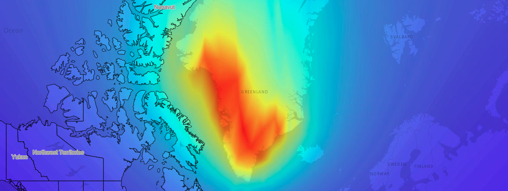

Menu
About EIS |
Freshwater
Sea Level Change
Fire
Case Studies / Notebooks

Melting Greenland
Greenland Firn Model
Greenland Firn Model: Notebook Access
×
Go to Notebook on Daskhub
Access requires a Daskhub account. To request an account, please contact SMCE Management Team.
Contact SMCE Team
Select a Case Study